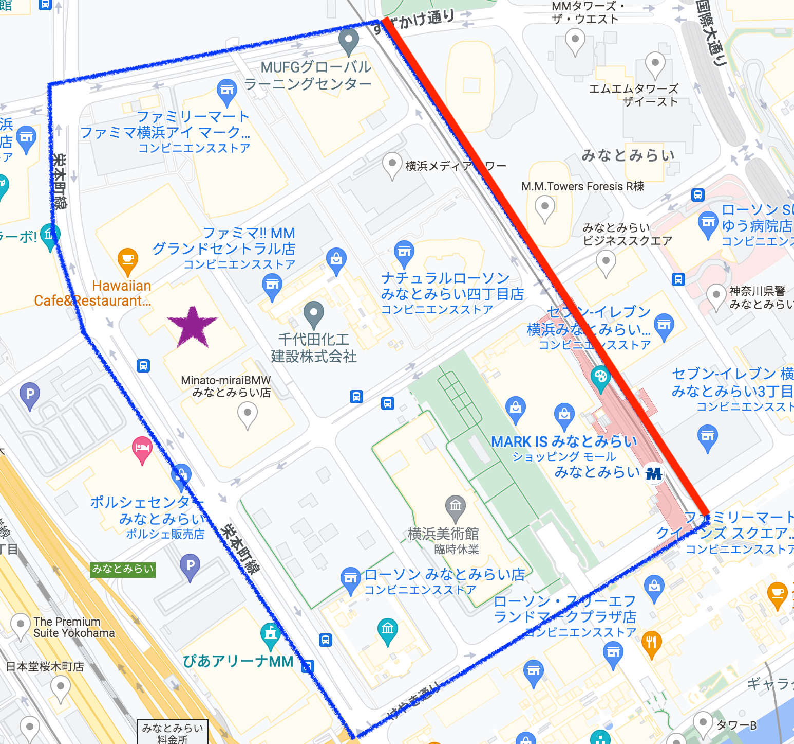
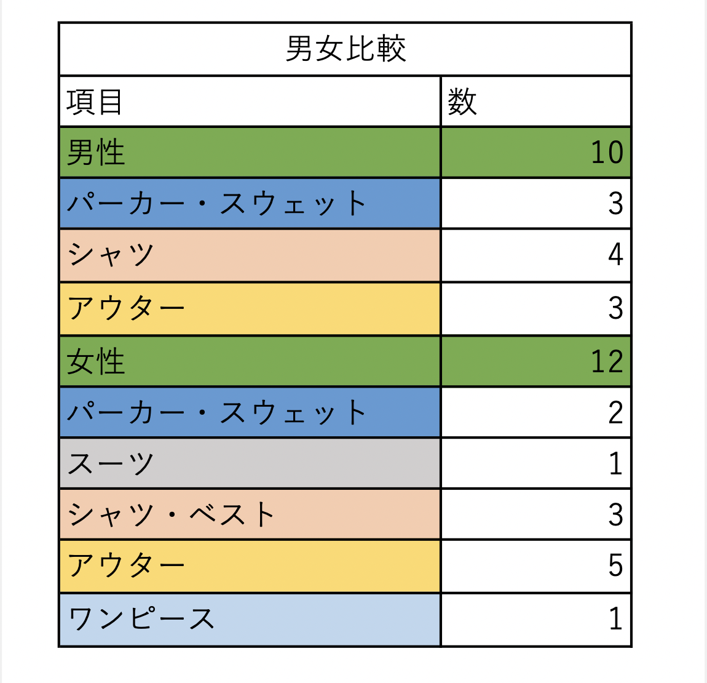
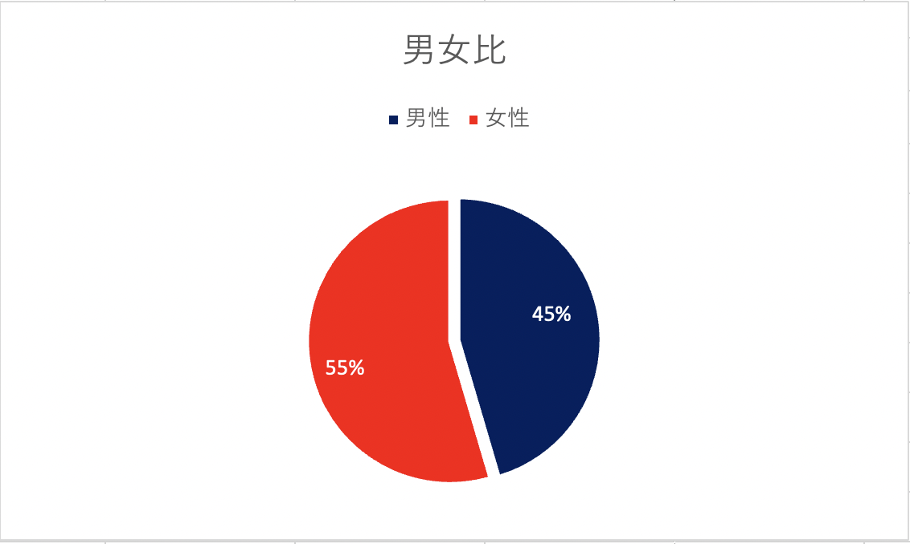
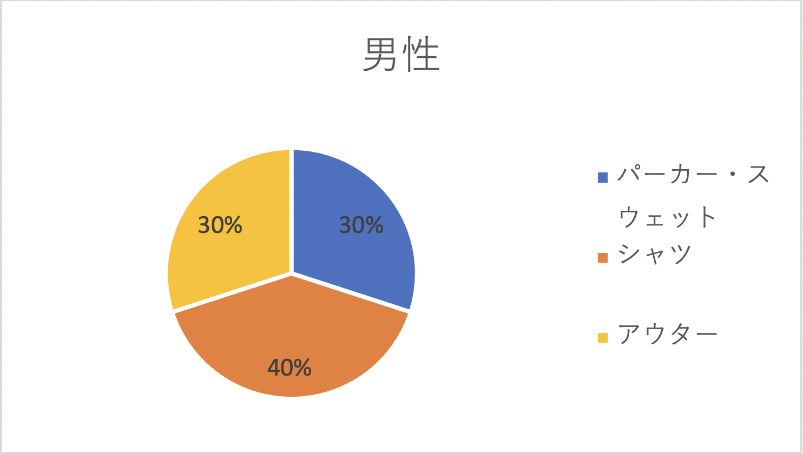
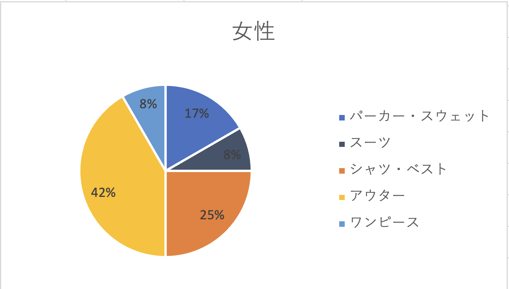
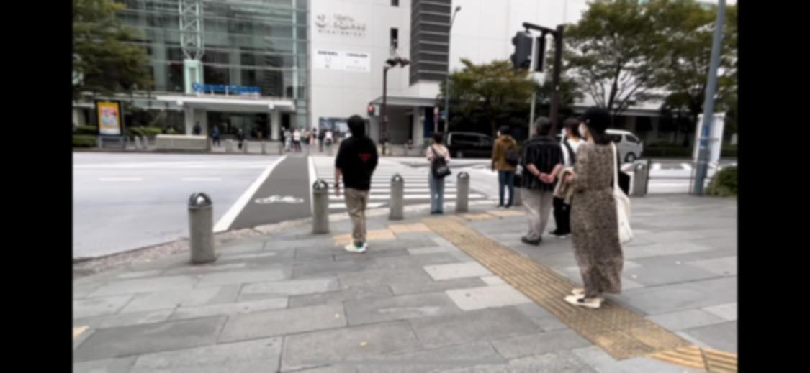

Maho 課題
移動観察 観察結果
観察場所

観察場所は、上の図の赤線上である
観察方法
- 一人がスマホにて動画撮影
- その他必要に応じてカウンターやメモを利用
- 観察終了後、各自動画を視聴し調査
観察結果

こちらをグラフにしたところ以下のようになった



観察を受けてまとめ
- 女性の方が、アウターを着ている人数が多かった
調査日の気温が比較的低かったため、女性は暖かい格好をしていたのか？
男性もアウターを着ていた人もいたが、トップスのみの人が多かった印象
これは、男性の方が寒さ耐性があるのか、インナーで調整しているのかが気になった
- 男性と女性でのシャツの着方の違い
男性は、ワイシャツなどの、シャツ系のトップスはそれ単独で着ていたが
女性は、シャツの上にニットベストなどレイヤーコーデをしていた
- このアウターの有無とトップスの重ね着が男女間での最も差が顕著に表れていると感じた
- 調査した時間帯がお昼過ぎだったため、スーツ姿は少なかった
また、これも調査場所が会社のビルが並ぶ通りから1本外れていたため
よりスーツ姿（男性も女性も）を見かけにくかったと考える
- やはり横断歩道・交差点では人通りが多かった

感想
今回の観察は、少し夏の暑さがおさまり肌寒くなってきた時期だったため
アウターを着ていたり、着ていなかったり
また、重ね着をしていたり、していなかったりといった差が見られた。
私はやはり男性の方が寒さに少し強い印象を持っているため、
男性がアウターを着ている人が少ないという結果は納得がいった。
しかし、その一方で「おしゃれは我慢」という言葉があるように
女性は冬でもミニスカートを履いて街を歩いていたりと
女性の方が、寒さよりもオシャレを優先する印象もある。
今回は、平日のお昼の時間帯だったため、
会社員もしくは、主婦、引退されたであろう年齢の方が多く見られた
そのため、女性の服装であっても、オシャレを優先するというより
実用性（暖かさなど）を優先した服装をしている人が多かったのではないかと感じた。